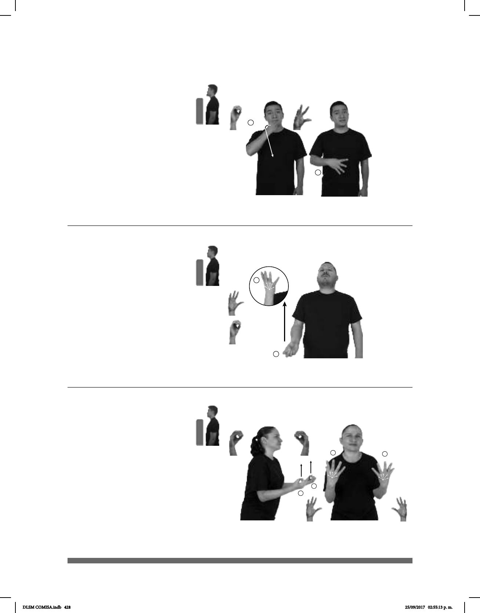

428
¿Cuántos? (A) (O-2)
¡Qué padre! – ¡Qué chido! (O-1)
Seña: SM
Seña que pasa de O.1
a 5.2
Palma hacia arriba.
De la cadera al pecho.
Movimiento: Recto mientras los dedos
se extienden.
Cabeza hacia
atrás, ceño fruncido, cejas arriba.
pron., adj. y adv.
Indica duda o interrogación, admira-
ción, impaciencia o molestia acerca de
la duración, cantidad o precio de algo.
Seña: SM
Seña que pasa de O.1 a 5.4
Palma hacia adentro.
La mano inicia sobre la boca y
termina a la altura del abdomen.
Movimiento: La mano se mueve
formando el número siete mientras los dedos
se extienden simultáneamente.
Cabeza inclinada,
cejas hacia arriba, boca semiabierta.
Simula la acción de lanzar
un beso hacia la persona u objeto referido.
loc. adv. Que es muy bueno,
muy divertido, de buena calidad, etc.
_______________________¡ !__
pos-TUYO CARRO QUÉ CHIDO
¡Qué chido está tu carro!
____________________________o.i.p.__
CÚANTOS HIJOS pro-TÚ TENER pro-TÚ
¿Cuántos hijos tienes?
Seña: SS
Seña que pasa de O.1
a 5.2
Palmas hacia arriba.
De la cadera al pecho.
Movimiento: Recto mientras los dedos
se extienden.
Cabeza hacia
atrás, ceño fruncido, cejas arriba.
pron., adj. y adv. Indica
duda o interrogación, admiración,
impaciencia o molestia acerca de la
duración, cantidad o precio de algo.
¿Cuántos? (B) (O-3)
______________________________________o.i.p.__
CUÁNTOS MÉXICO-NACIONAL SORDOS HABER
¿Cuántos sordos hay en México?
DLSM COMISA.indb 428 25/09/2017 02:55:13 p. m.